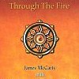

strange music page
progressive? * (K.Relf's)renaissance
#Renaissanceとゆーと通常はAnnie Haslamの在籍した方を指すようです。このグループは元YardbirdsのK.RelfとJ.McCartyが創ったグループでした。なぜか3枚目からはメンバーが総とっかえしていまして、そっちの方にA.Haslamが在籍していて逆に有名なようです。個人的にはK.Relfの在籍時のグループのほうが好きです。
K.RelfはRenaissanceをやめた後Harmagedonというグループをつくりましたがアルバム1枚で解散。その後Renaissanceの頃の音をそのまま発展させたようなNowというグループを作ろうとしますが、事故で死んでしまいます。そのグループがJ.McCartyを中心にIllusionというグループになったのですが、このグループがK.RelfのRenaissanceの頃の音を継承したものになってます。
最近(といっても2,3年前)A.HaslamがRenaissance名義でCD出したりとか、M.Dunfordが新しい女性ボーカルとRenaissanceを再結成したりとかしましたが、あんまり好きになれませんでした。 |
- (K.Relf's)Renaissance
- (A.Haslam's)Renaissance
- Illusion
- Jim McCarty
- Renaissance Illusion
- ARMAGEDON
|
#Yardbirdsを解散したK.Relfの結成したグループとして結構注目を集めたようです。このアルバムはうちの親が持ってたらしく、高校生の頃に親父の古いテープをみつけた中に入ってました。(ちなみにそのテープのB面はVannila Fudgeでした)
フォークでクラシカルでシンプルな音です、イギリス人らしいウェットな感覚です。
- Kings & Queens
- Innocence
- Island
- Wnaderer
- Bullet
- Keith Relf (vocals,guitars,harmonica)
- Jim McCarty (percussions,vocals)
- John Hawken (piano,harpsichord)
- Louis Cennamo (bass)
- Jane Relf (vocals,percussions)
LINE RECORDS: LICD-9.00421 0

- Love Goes On
- Golden Thread
- Love is All
- Mr.Pine
- Face of Yesterday
- Past Orbits of Dust
- Keith Relf (vocals,guitars)
- Jim McCarty (drums,vocals)
- Louis Cennamo (bass)
- John Hawken (keyboards)
- Jane Relf (vocals,percussions)
- Neil Korner (bass on 4.)
- Michael Dunford (guitars on 4.)
- T.Slade (drums on 4.)
- T.Crowe (vocals on 4.)
- Don Shin (electric piano on 6.)
LINE RECORDS: LICD-9.00425 0
#K.Relf時代のルネッサンスの唯一のブー○CDだと思います。音質もあんまり良くないけど、これしかないのでしょーが無いです。BEAT CLUBかなんかにこの頃の映像が残ってるみたいですけど、見たこと無いです。見たい。
Jane Relfのシングルや、TogetherとReign(K.RelfとJ.McCatyのフォークデュオ、TogetherはRennaisanceの前、Reignは後)のシングルなんか入ってます。
- King & Queen
- Innocence
- Wanderer
- No Name Raga
- Island
- Without A Song for You
- Make My Time Pass By
- The Sea
- Line of Least Resistance
- Natural Lovin'Man
- Henry's Coming Home
- Love Mum And Dad
track 1-5. Live at Fillmore West 1969
track 6.7. Jane Relf's Single 1971
track 8. Renaissance Single 1970
track 9.10. Reign Single 1970
track 11.12. Together Single 1968
TNT RECORDS: TNT-910109
#今更まさかの、K.RelfのRenaissanceの1枚目+レア音源です。
えーと唯一のシングル "The Sea/Island"が収録されてます、今までブートの上のヤツでしか聞けなかったので嬉しいです。11曲目のK.Relfの曲は
Enchanted Caressにも入ってるヤツ。8.9.10.は正体不明です8.9.はこの頃のRenaissanceっぽいですけど、10.はなんだかK.Relfのソロっぽいフォークな曲調です。
えーと私みたいな初期RenaissanceとIllusion大好きな方は買いましょう、ちなみに1枚目買ってない方はこっちの方がお徳です。
- Kings & Queens
- Innocence
- Island
- Wnaderer
- Bullet
- The Sea
- Island
- Prayer For Light
- Walking Away
- Shining Where The Sun Has Been
- All The Falling Angel
MOONCREST RECORDS: CRESTCD-033 (1998)
#いまだにあまり好きになれないM.Dunfordの方の(A.Haslamの方と言ったほうが良いのかな?)Renaissanceです。でもこの1枚目はけっこーK.Relfの方のRenaissanceの哀愁漂う雰囲気が残ってて結構好きです。ちなみに2と5はJ.McCarty作曲です。
- Prologue
- Kiev
- Sounds of The Sea
- Spare Some Love
- Bound For Infinity
- Rajah Kahn
- John Tout (keyboards,vocals)
- Annie Haslam (vocals,percussions)
- Rob Hendry (guitars,vocals)
- John Camp (bass)
- Terry Sullivan (percussions)
- Michael Dunford (arrangement,composed)
- Francis Monkman (VCS3 solo on 6.)
東芝EMI: TOCP-7368 (original release 1972)
#A.Haslamの方のルネッサンスの2枚目。3曲目だけJ.McCartyが作曲してて、他はM.Dunfordの曲です。
そんな訳で3曲目だけちょっと古くさいフォーキーな印象の曲になってます、でもなんだか今聴くとちょっと瑞々しくて懐かしいような印象を受けます。他のM.Dunfordの曲はプログレ好き(俺のことかな？)には受けそうなんだけど、大げさに盛り上げるよーなアレンジが今聴くとダメな感じです。この後のルネッサンスはさらにいわゆるシンフォニックな曲調になっていって(運命のカードとシェラザード)、その後70年代後半になると時代の影響で急にポップな曲になって83年に解散しちゃいます。こないだ復活して来日してたけど。
- Can You Understand?
- Let It Grow
- On The Frontier
- Carpet of The Sun
- At The Harbour
- Ashes Are Burning
- John Tout (keyboards,vocals)
- Annie Haslam (vocals,percussions)
- John Camp (bass)
- Terry Sullivan (percussions)
- Michael Dunford (acoustic guitars)
- Andy Powell (guitars on 6.)
東芝EMI: TOCP-6800
#えーとILLUSIONの2枚のアルバム(Out of The MistとILLUSION)のカップリングから一曲抜いたCDです。私が必死こいて捜してた頃にはこれしかCDになってなかったんでこっちを買っちゃいました。今はちゃんとしたカップリングのCDが出ていますので
こっちじゃない方を買いましょう。
- Madonna Blue
- Never Be The Same
- Louis' Theme
- Wings Across The Sea
- Cruising Nowhere
- Man of Miracles
- The Revolutionary
- Isadora
- Roads to Freedom
- Beautiful Country
- Solo Flight
- Everywhere You Go
- Candles Are Burning
produced by Paul Samwell-Smith
- James McCarty (vocals,guitars,percussions)
- John Hawken (rhodes,piano,mellotron,moog,harpsichord)
- Jane Relf (vocals)
- Louis Cennamo (bass)
- John Knightsbridge (guitars)
- Eddie McNeil (drums,bells,timpani,percussions,vibes)
TRC: TRC-030
#えーとIllusionの幻の3枚目、らしいです。どーやらお倉入りになってたデモテープの再発らしいです、録音は1979年頃。内容は相変わらずのフォークでクラシカルなもの前2作よりすこしポップになったような感じがします。素朴でシンプルなメロディーでやっぱ良いです。10曲目はK.Relfの未発表曲みたいです。
このアルバムはどこかで偶然見かけて買ったんですが(国内解説がついてたので国内盤みたいです)それ以降、あんまり見かけたことないです。人気無いんですかねー？結構良いのに。
- Night in Paris
- Walking Space
- The Man Who Loved the Trees
- Getting into Love Again
- As Long as We're Together
- Slaughter on Tenthe Avenue
- Living Above Your Head
- Crossed Lines
- You Are The One
- All the Falling Angels
- James McCarty (acoustic guitars,vocals,percussions)
- Jane Relf (vocals)
- Louis Cennamo (bass)
- John Hawken (keyboards)
- Eddie McNell (drums)
- John Knightbridge (guitars)
- Keith Relf (vocals on 10.)
LINE RECORDS: OLCD 9.50968 X (1989)
#超渋いです、(K.Relf's)Renaissance,Illusionの路線そのまんまです。タイトルも...意識してるのかな？
これ買った頃たしかM.Dunfordの方の復活Renaissanceも買っちゃったんだけど、こっちの方が100倍良かったです(自分には)。ちょこちょこですが、J.Relfもコーラスで参加してます。イギリス人万歳。
- Out of the Dark
- We're Still Dreamers
- Signs from an Age Gone by
- Just a Breath Away
- Just Breaking Through
- What if Summer never Came
- Still You Don't Believe
- Longing (Link)
- Home is where the Heart is
- Back to the Earth
- James McCarty (vocals,drums,keyboards)
- Dugard Brown (guitars,backing vocals on 1.2.5.6.10.)
- Matthew Fisher (keyboards on 1.3.9.10.)
- Rod Dimick (bass on 1.2.3.5.6.9.10.)
- Jane Relf (backing vocals on 3.4.7.10.)
- Jackie Rave (backing vocals on 2.5.6.8.)
- Mandy Bell (backing vocals on 2.8.)
- Clifford White (keyboards on 5.7.)
- Eddie Phillips (guitars on 3.9.)
Higher Octave MUSIC: HOMCD-7057 (1992)
#とてもとても久々に
GARDEN SHEDなんかへ行ってみたら、コレが売ってました。
「Renaissance Illusion」って.....どっちだよ？
どっちでも良いんですけど...結局James McCartyのソロアルバムの(上の)延長かな？でもJohn Hawkenが参加してて、上のヤツよりかはILLUSION色が強いです。とても渋い英国フォークロックにクラシカルなピアノって訳です。
まぁ、初期RENAISSANCEとILLUSION好きな方だったら損はしないかと思います。ただジャケットに "James McCarty with John Hawken Jane Relf Louis Cennamo" なんて書いてあったので、Jane Relfがメインボーカルかと思ったんですがけど一曲もメインボーカルありませんでした。残念、次回は(あるかな?)是非。 (2001.8.29)

- One More Turn of The Wheel
- Good Heart
- Glorious One
- Through The Fire
- Blowing Away
- Mystery of Being
- Beat of The Earth
- Beyond The Day
- My Old Friend
- Through The Fire (Reprise)
- James McCarty (vocals,drums)
- Jane Relf (vocals)
- Louis Cennamo (bass)
- John Hawken (piano,keyboards)
- John Idan (acoustic guitars on 1.3.7.)
- Ravi (percussions on 1.)
- Dzal Martin (guitars on 2.4.6.10.)
- Jackie Rawe (vocals on 2.3.5.7.8.)
- Mandy Bell (vocals on 2.3.6.7.)
- Emily Burridge (cello on 3.5.)
- Gay Le Port (acoustic guitar on 5.)
- Jonathan Digby (acoustic guitar on 7.)(bass on 8.)
- Danny relf (keyboard programming on 7.)
- Ron Korb (flute,vocals on 8.)
KISSING SPELL/SPIRAL: SCD-923 (2001.6)
#えーとコイツは音的にはほとんど関わりは無いのですが、第一期のRenaissanceが消滅した後にKeith RelfとLouis Cennamoがやっていたハードロックバンドです。1975年でコレってのはちょっと古いのではないかと・・・まぁそのダサ格好イイような気もしなくも無いんですけど。
まぁそのコレでの活動はこのレコード一枚のみ。その後Keith Relfは第一期Renaissanceの再編の「NOW」っていうバンドの準備をしていましたが、1976年に感電死。こんなバンドやらんでJane RelfとかJim McCartyなんかとRenaissance続けてれば良かったのに・・・合掌。(2004.1.30)
- Buzzard
- Silver Tightrope
- Paths And Planes And Future Gains
- Last Stand Before
- Basking In The White Of The Midnight Sun
- Warning Comin'On
- Basking In The White Of The Midnight Sun
- Brother Ego
- Basking In The White Of The Midnight Sun (Reprise)
- Keith Relf (vocals,harmonica)
- Martin Pugh (guitars)
- Bobby Caldwell (drums,percussions,vocals)
- Louis Cennamo (bass)
REPERTOIRE RECORDS: PMS-7089-WP (original release 1975)